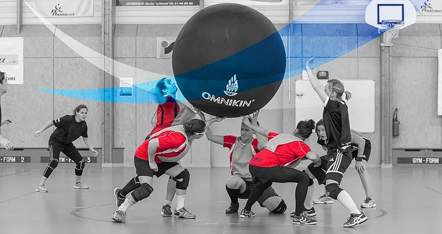

Kin-Ball First Session
A three-team game played with one enormous ball: serve by calling a colour, keep the ball off your ground, and win by being hardest to catch out.
Before you begin
- Ages
- 13–14
- Group
- 12–24 kids
- Time
- 45–60 min
- Where
- Indoors & Outdoors
- Prep
- Some prep needed

Setup
Inflate the ball before you brief the players, and learn its weather yourself: a kin-ball under-inflated sags and dies, over-inflated skitters off forearms, and the session's first ten minutes belong to the ball's behaviour. How it floats off a flat palm lift, how it drifts on a hall's air currents, how much warning its size gives a receiving team. Walk the court for the game's real hazards, which are not collisions with the ball, the ball hurts nobody, but collisions between players watching the sky: clear the edges, pad or rule out anything a back-pedalling player could meet without looking, and set the rest benches well outside the square. Form the three teams mixed and balanced by the evidence of the handling round, announced from the slate by colour, because the game's strange diplomacy, two teams can tacitly hunt the third, only stays sporting when no colour begins the session outclassed. Set the session's shape now and write it on the slate: handling first, the serve and its call second, fault law third, open play last, because a game whose scoring is other teams' mistakes cannot be learned by players still guessing what a fault is.
Materials
- one kin-ball, a very large, very light inflatable ball, a metre or more across, of the kind a whole team can hold up between them (the ball is the game's whole character: it floats, it drifts, it forgives, a substitute must be genuinely big and genuinely light, or the session teaches a different game and says so on the slate)
- three team colours worn unmistakably (bands, bibs or sashes in the three colours the serve will name. The call is the game's engine, so the colours must be readable across the whole court at a glance, in the light the court actually has)
- the court markings, one shared playing square, generous, with no goals, no zones and no centre line to defend (the emptiness is deliberate: with three teams and one floating ball, territory is wherever the ball is falling, and the lines that matter are the court's edges, taped bright and walked at setup)
- the session slate and chalk (teams by colour, the laws taught, faults by kind, and the standings kept as the game itself keeps them. A team's score is the faults it has NOT committed, read aloud at every break so the room always knows who is hardest to catch out)
Steps
- The framing, the great ball resting on the floor between the three teams: 'Three teams, one ball, no owner. This ball belongs to nobody. It is too big to own and too light to fight over. Play works like this: a team in possession serves by striking the ball up and CALLING a colour before it leaves their hands. Omnikin, and the colour named must catch or return it before it touches the ground. If the named team lets it fall, or faults in the handling, the fault is theirs, and BOTH other teams gain. Nobody attacks a goal. Nobody guards a player. You win by being the team the ball cannot catch out, while two other teams take turns trying to catch you. That makes this the most diplomatic game on the shelf: sometimes the bravest play is a gentle serve at the strongest team, sometimes the whole court senses whose turn it is to fall, and the slate keeps the only score that matters, the faults, in chalk, where diplomacy can see itself. We learn the lift first, the call second, and only then do we hunt.' The serve is demonstrated entire, lift, call, flight, catch, by a rehearsed trio before any law is argued, because this game is understood by the eyes ten minutes before it is understood by the ears.
- Handling school, where the game's real skill is taught: the ball is received on forearms and open palms and lifted, never punched. A punch sends it anywhere, a lift sends it where the team agrees. Teams practise the three-player lift in their colours: two support, one strikes upward, the ball climbing straight and true, and the keeper calls the fault honestly in practice, a ball struck downward, a ball caught and held rather than lifted, a ball allowed to roll off a shoulder untouched. The call is rehearsed as a skill in itself: the striker names the colour loud and early, before contact, because a late call is a trap and the law will treat it as one. The named team must have the ball's whole flight to organise, and a serve that ambushes by silence is chalked as the server's fault, not the receivers' failure. Every player serves, lifts and receives in school, in rotation, because a colour with one server is a colour with a single point of failure, and this session is building teams, not specialists.
- First play, in short rounds the slate governs: possession rotates by the fault law entire, a team that faults yields the serve; a serve whose called team returns the ball cleanly puts the ball live for the return call, and the game flows serve to serve with the keeper chalking faults by kind: ground, hold, late call, out of court. Early rounds are stopped kindly and often: a team milling in confusion is re-formed into its receiving shape, spread, knees soft, eyes up, the lift rehearsed as one word, and the correction is chalked as teaching, never as shame, because three-team play bewilders every first room and the bewilderment is the curriculum. The keeper names the diplomacy when it first appears, aloud and with respect: the two stronger colours beginning to serve only at the third is legal, visible, and answerable. The hunted team's counter is not complaint but cleanliness, lifting everything, faulting at nothing, until hunting them stops paying.
- The standings round, when the laws are holding and only then: rounds lengthen, substitutions rotate by the slate's published order so every player defends and serves inside the session's real pressure, and the keeper reads the fault standings aloud at every break. The game's scoreboard is a list of mistakes, which makes reading it an education in itself: the leading team is the one with least chalk against its colour. A runaway session is rebalanced once, in the open, by the keeper's stated evidence, teams re-dealt by colour if the fault columns have made the game's diplomacy a procession, because a session where the hunted team never receives a fair serve teaches the hunters nothing either. Between rounds the ball rests and arms rest with it: lifting a metre of floating ball is shoulder work disguised as play, and the session's pace is set by the slate before enthusiasm can spend the room's best handling in the first rounds and call the rest heart.
- Closing, the slate read entire and the great ball deflated by its crew: the keeper reads the session aloud, laws taught, rounds played, faults by kind and by colour, and the session's final standings spoken the game's way: the colour hardest to catch out, named with its fault count entire. The room agrees its one number to beat: the longest unbroken rally of serves and returns the whole court held without a fault, counted honestly whether it is four or fourteen. The tell-back is said with the ball resting against the slate: 'An hour ago, three teams and one floating ball sounded like a party trick. Now this room lifts together, calls early and loud, hunts in the open and answers a hunt with clean hands. Three teams, one ball, no owner, and the winners are simply the team the ball could not catch out. Next session the rally mark is waiting, and the ball will be inflated before we are.' The ball is inspected as it is folded, seams, valve, slow leaks listened for, faults noted to the adults, and ball, colours and slate are stored together where the next session will find the whole game in one place.
Variations
Easier: A two-team version (a small group or a first hall): the same lift, call and fault law played colour against colour with the serve alternating. The diplomacy goes quiet, the handling school entire, and the session's rally mark still honestly kept.
Harder: A seated-circle version (a court whose space is tight): teams in a wide circle lift the ball across and down to the called colour's sector, ground faults judged where the ball lands. The call, the lift and the slate entire, at a scale where control outranks flight.
Safety
The ball is this game's mercy and its hazard is everything else: a kin-ball cannot injure, but players watching it can back into walls, benches and each other, so the court's edges are cleared and padded at setup, the square is walked before play, and a player who must look down stops being a receiver until their footing is sure. The keeper calls 'eyes down' balls dead without blame, always, because no fault on the slate is worth a fall. Receiving is taught before it is tested: lifts come from forearms and open palms at chest height or above, nobody heads this ball, it is light enough to invite it and drifting enough to punish it, and a ball falling onto a player who has lost it in the light is a ball let fall, chalked and replayed, never rescued through a face. Inflation is the adult's or keeper's checked job: an over-hard ball is deflated to the session's agreed give before play, and a ball that bursts or tears mid-round stops play at once. The square is cleared of its skin before feet return to it. The call law is a safety law in disguise: serves are never aimed at a team still re-forming, a late call is the server's fault entire, and a team that needs a breath asks the keeper for a held serve and gets it without negotiation. Three teams can wait; one winded player should never have to chase a floating ball to earn a rest.
Source: Wikipedia, en.wikipedia.org
Inclusion notes
Three-team play staffs its honours by colour, and the session says so in the open: the keeper, caller of rounds, judge of faults, holder of the slate, runs the game from the court's side at full authority, and the standings they read are the game's memory. Receiving shapes are built so every player's ground is real: a receiver may hold a marked sector from a seated or standing base agreed with the keeper, because the skill honoured is the lift, forearms, timing, the ball sent up true, not the run that preceded it, and a sector held cleanly is a sector the called serves must respect entire. The serve rotation is the slate's, published, so quiet players serve inside the game's real pressure on their turn rather than by shouting over louder colours, and the handling school gives every player as many rehearsed lifts as they want before open play, with the ball's float making first success genuinely likely. This game's mercy is that its ball wants to be caught. A member whose day is the slate, the colours and the rally count is inside the game's honours, not beside them: the framing said the winners are the team the ball cannot catch out, and the slate is where being caught out is written down. The keeper's chalk is the game's official truth.
Tried this? Rate it
Your ratings live in this browser only. Nobody else can see them. There are no community ratings here; every star on this card is yours.
Rate this activity, add a note, or write a reflection
Quick reflection
Optional, saved with your rating, and exported with "Copy my week".
Full activity card,